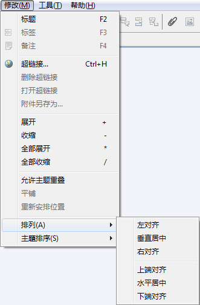

您可以对思维图中中心主题以外的所有主题进行排列。 方法如下：
- 选中需要排列的主题；
-
按照下列步骤选择合适的排列方法：
- 在菜单栏选择“修改 > 对齐 > 左对齐/水平对齐/右对齐；上端对齐/垂直居中/下端对齐”。
- 在菜单栏选择“思维图 > 允许主题重叠”。
- 在菜单栏选择“思维图 > 平铺自由分支”。
- 在菜单栏选择“思维图 > 重新安排主要分支”。
这些命令含义如下：
- 左对齐：所有选中的主题居左对齐。
- 居中对齐：所有选中主题居中对齐。
- 右对齐：所有选中的主题居右对齐。
- 上端对齐：所有选中主题上端对齐。
- 垂直居中：所有选中主题垂直居中对齐。
- 下端对齐：所有选中主题下端对齐。
- 允许主题重叠：所有选中主题在移动过程中可以相互重叠。
- 平铺自由主题：平铺当前图中所有重叠主题。
- 重新安排主要分支：当前思维图中的分支主题均回到默认的位置。

您可能还对下列内容感兴趣……